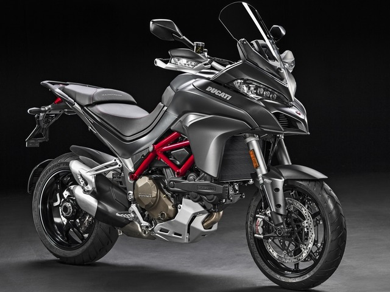

Технические характеристики - DUCATI MULTISTRADA 1200S
Мощность л.с. - 150
Объем бензобака, литров - 20
Высота по седлу, мм - 880
Сухая масса, кг - 189
Система запуска - Стартер
Топливная система питания - Инжектор
Тип(вид) мотора - V2
Тип мотора - 4-х тактный
Наличие центральной подножки - Есть
Коробка передач - мех. 6-х ступч.
Тормоза передние - 2х дисковые
Тормоза задние - Диск
Тип тормозов - Интегральные;ABS
Тип передней ходовой - Перевертыш
Тип задней ходовой - Моно маятник
Задний амортизатор - 1 амортизатор
Приборная панель - Цифровая
Привод сцепления - Гидравлика